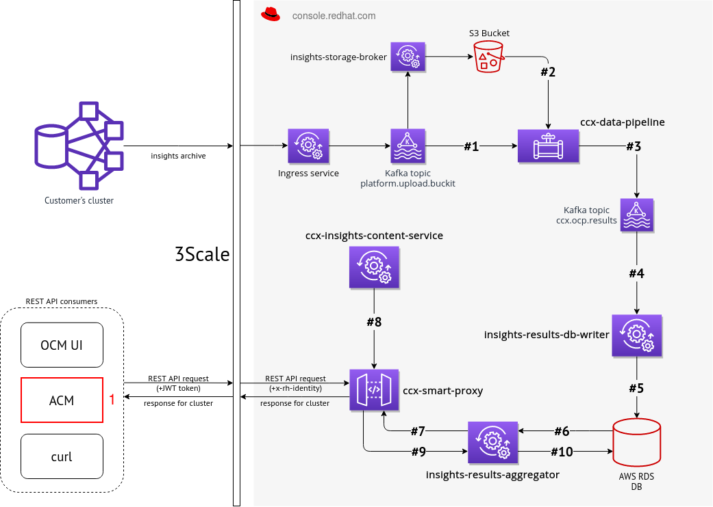
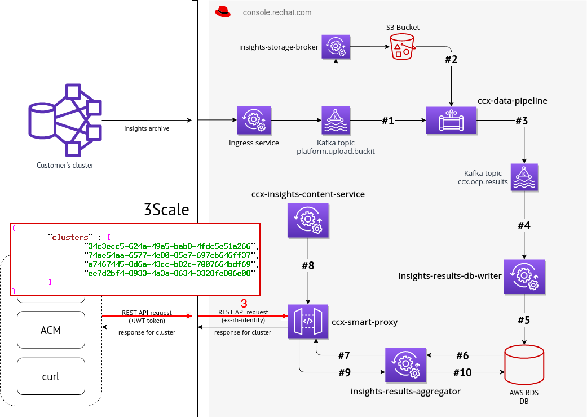
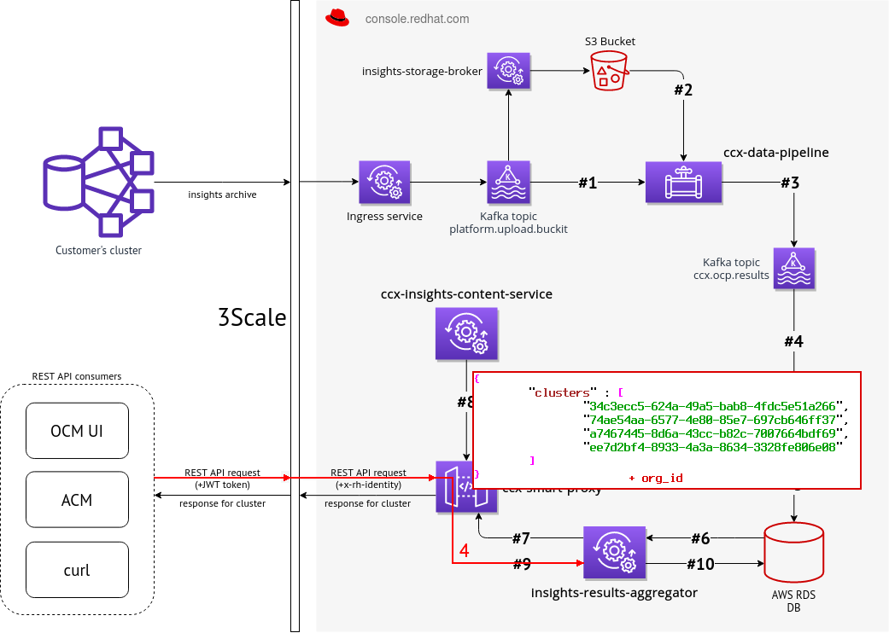
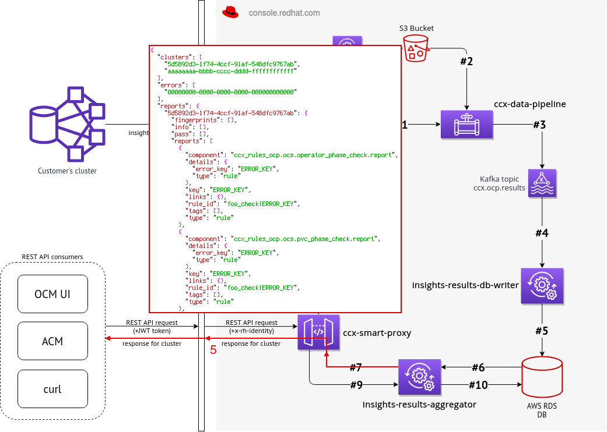

Interface with ACM
Step #1: request from ACM to Smart Proxy via 3Scale

Step #2: request handling by 3Scale
Step #3: processing request by Smart Proxy

Step #4: processing request by Insights Results Aggregator

Step #5: returning response to ACM
